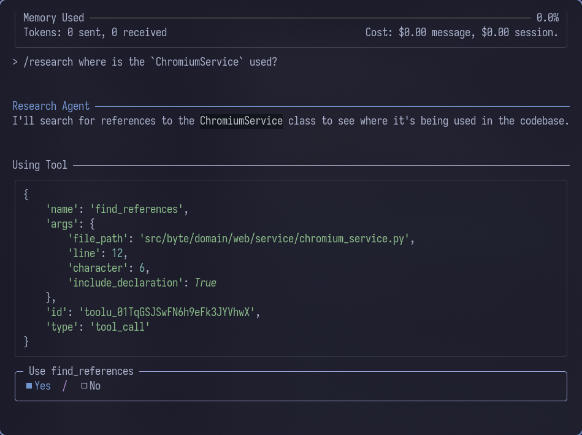

LSP (Language Server Protocol)
Byte's LSP integration provides code intelligence features like hover information, go-to-definition, find references, and completions by connecting to language servers. It manages multiple LSP servers simultaneously, routing requests to the appropriate server based on file extensions.

Quick Start
Enable LSP
Configure LSP in .byte/config.yaml:
lsp:
enable: true
timeout: 30
servers:
typescript:
command: ["typescript-language-server", "--stdio"]
file_extensions: ["ts", "tsx", "js", "jsx"]
python:
command: ["pylsp"]
file_extensions: ["py", "pyi"]
Use with Research Agent
LSP tools are only available through the /research command:
The research agent will use LSP tools like find_references, get_definition, and get_hover_info to analyze your codebase and provide detailed findings.
Research findings are saved to session context rather than the conversation history. This allows other agents to reference the research results without cluttering the message thread. The findings remain available throughout your session for the AI to use when making decisions or generating code.
Byte will:
- Start configured LSP servers in the background on boot
- Automatically open documents when you add them to context
- Provide code intelligence through LSP tools to the research agent
- Route requests to the appropriate server based on file extension
Configuration
Server Configuration
Each LSP server requires:
command (array of strings, required)
- Command and arguments to start the LSP server
- Example:
["typescript-language-server", "--stdio"] - Server must support stdio communication
file_extensions (array of strings, required)
- File extensions this server handles
- Example:
["ts", "tsx", "js", "jsx"] - Used to route requests to correct server
initialization_options (object, optional)
- Custom initialization options passed to the server
- Server-specific configuration
Example Configuration
lsp:
enable: true
timeout: 30
servers:
typescript:
command: ["typescript-language-server", "--stdio"]
file_extensions: ["ts", "tsx", "js", "jsx"]
initialization_options:
preferences:
includeInlayParameterNameHints: "all"
python:
command: ["pylsp"]
file_extensions: ["py", "pyi"]
initialization_options:
pylsp:
plugins:
pycodestyle:
enabled: false
rust:
command: ["rust-analyzer"]
file_extensions: ["rs"]
See the Settings Reference for complete configuration options.
Available Tools
The Research Agent (/research command) has exclusive access to LSP functionality through these tools. Other agents do not have access to LSP features.
Get Hover Information
Get documentation and type information for a symbol:
Returns:
- Documentation strings
- Type signatures
- Parameter information
Go to Definition
Find where a symbol is defined:
Returns:
- Definition location(s)
- File path and line/column range
- Code context around definition
Find References
Find all references to a symbol:
Returns:
- All reference locations grouped by file
- Code context for each reference
- Line and column information
Related Concepts
- File Context - Files must be in context for LSP to work
- Conventions - Document language-specific patterns
- Settings Reference - Complete LSP configuration options